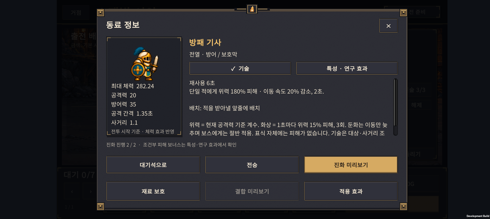
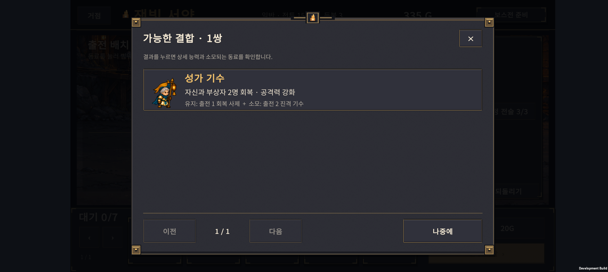
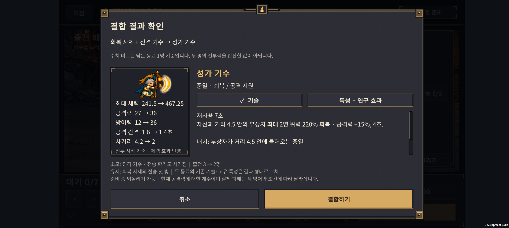

v0.41 · 보고 선택하는 진화와 결합
2026-10-25 · IGNIS: ASHEN OATH · Unity 6.3 · Galaxy Buddy2
동료 30형태의 외형·스탯·기술 설명을 게임 안에 연결했다. 진화와 결합을 확정하기 전에 결과와 잃는 것을 확인할 수 있다.
1. 이번 변경
| 화면 | 제공하는 정보 |
|---|---|
| 동료 상세 | 대기·공격 도트 애니메이션, 역할, 최대 체력·공격력·방어력·공격 간격·사거리 |
| 기본 → 분기 진화 | 두 결과의 도트와 역할 카드, 선택한 결과의 기술, 현재 동료 대비 스탯 변화 |
| 분기 → 최종 진화 | 새 최종 기술과 유지되는 분기 기술 모두 표시 |
| 결합 목록 | 결과 도트·이름·능력 요약, 남는 동료와 소모되는 동료. 한 페이지 3쌍 |
| 결합 확인 | 결과 능력, 재료 동료·전승 특성 소멸, 남는 전승 특성, 출전 인원 변화 |
| 특성·연구 효과 탭 | 고유·전승 특성의 조건과 수치, 현재 원정에 적용되는 연구·전술 |
기술 설명에는 재사용 시간, 대상·최대 인원, 공격력 계수, 거리·범위, 지속 시간을 넣었다. 긴 설명은 손가락으로 스크롤할 수 있다. 확정·취소 버튼은 아래에 고정했다.
동료 상세

두 진화 분기 비교
최종 형태가 유지하는 기술
결합 목록과 결과


2. 수치와 설명의 기준
- 최대 체력에는 현재 원정의 연구·전술을 적용한다. 비교 수치는 실제 전투 유닛을 만드는 같은 코드에서 계산한다.
- 공격력과 조건부 피해 보너스는 구분한다. 방패술 등은 항상 공격력에 더해지는 수치가 아니므로 조건과 함께 효과 탭에 표시한다.
- 기술의
위력 220%는 현재 공격력에 대한 계수다. 실제 피해는 적 방어력·상태·연구·일시 강화에 따라 달라진다. - 둔화는 이동 속도를 줄인다. 공격 불가인 빙결과 구분하며 보스에게는 둔화가 절반 적용됨을 설명한다.
- 반격 기사는 보호막이 피해로 깨지는 조건과 2.5초 재사용을 표시한다.
- 결합 수치의 화살표는 남는 동료 1명 → 결과 1명 비교다. 두 유닛의 총 전투력 비교가 아님을 설명한다.
- 결합 시 두 동료의 기존 기술·고유 특성은 결과 형태로 교체된다. 남는 동료의 전승 특성만 유지되며, 재료의 전승 특성은 사라진다.
- 원정의 복제본에서 실제 진화·결합 연산을 실행해 결과를 계산한다. 원본 저장·난수·골드·되돌리기 기록은 건드리지 않는다. 동일한 미리보기는 재사용한다.
3. 검증 결과
| 검사 | 결과 |
|---|---|
| 미리보기 계산 | 306개 유효 사례, 1,887개 조건 통과 |
| 계산 범위 | 30형태 × 효과 3상태, 분기 진화 12종·최종 진화 12경로 × 효과 3상태, 결합 6종 × 재료 순서 2 × 출전 상태 4 × 효과 3상태 |
| 추가 거절 검사 | 보호된 재료, 성장 부족 진화 거절 |
| 기존 회귀 | 원정 2,052개, 결합 전투 15개, 배치 미리보기 11개 조건 통과 |
| Unity | 30형태의 설명·이미지·제목 줄바꿈, 최종 분기 기술, 미리보기 재사용·원본 보존 등 217개 조건 통과 |
| Buddy2 진화 | 분기 변경·취소 후 데이터 동일, 반격 기사 확정, 되돌리기로 전체 원정 데이터 복원 |
| Buddy2 결합 | 성가 기수 확정, 재료 제거·전승 유지·출전 3→2명 일치, 되돌리기로 전체 데이터 복원 |
| Buddy2 화면 | 일반 상세, 두 진화 카드, 최종 기술·분기 기술, 결합 목록·확인, 개별 동료에서 연 결합 목록·취소, 터치 스크롤 확인 |
Unity 글자 높이 검사에서 이름 영역이 좁은 문제를 발견해 높이를 늘린 뒤 통과했다. 최종 APK는 Buddy2에 설치했다. 검사 뒤 원래 PlayerPrefs 전체를 바이트 단위로 일치하게 복원하고 앱을 종료했다.
검증 범위: 이번 실기기 검사는 UI용 QA 체크포인트를 사용했다. 단계·성장 상태는 시험용이며 정상 플레이 완주나 밸런스 증거가 아니다. 연속 원정·난도 결과는 v0.40 기록을 참고한다. 전투 수치·성장 비용·난도는 이번에 조정하지 않았다. 영어 문구와 다른 해상도·기기의 실기기 검증은 남아 있다.
4. 실행과 파일
./tests/UnitPreview/run.ps1
./tests/ExpeditionRun/run.ps1
./tests/HybridCombat/run.ps1
./tests/PreparationPreview/run.ps1
Unity 배치 실행: Expedition.EditorTools.UnitPreviewValidation.ValidateAndBuild
- 정보 문구:
unity/Assets/Scripts/Core/CatalogUnitInfo.cs - 결과 계산:
unity/Assets/Scripts/Core/ExpeditionUnitPreview.cs - 화면:
unity/Assets/Scripts/Presentation/ExpeditionUnitPreviewScreen.cs - 도트 표시:
unity/Assets/Scripts/Presentation/CatalogArtView.cs - APK:
unity/Builds/Android/expedition-combat-prototype.apk - APK SHA-256:
9CA1E3D389B50FEC2120AC97C24F693E6DDFAC0FCA237CCB0945461F6D96C5DF
5. 다음 우선순위
- 첫 성장·진화 시점에 미리보기를 자연스럽게 열어주는 짧은 안내.
- 새 이용자가 설명을 보고 역할에 맞게 배치·성장하는지 관찰.
- 관찰 결과와 v0.40 기록을 함께 보고 결합체 효용·후반 난도 조정.
선택의 결과를 이해한 뒤 빌드를 실험할 수 있는 정보량을 기준으로 삼는다.